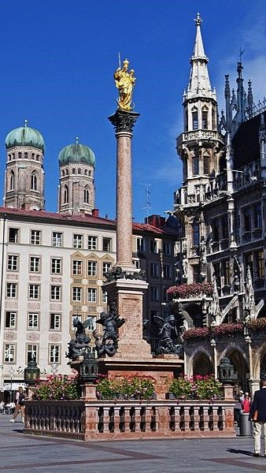
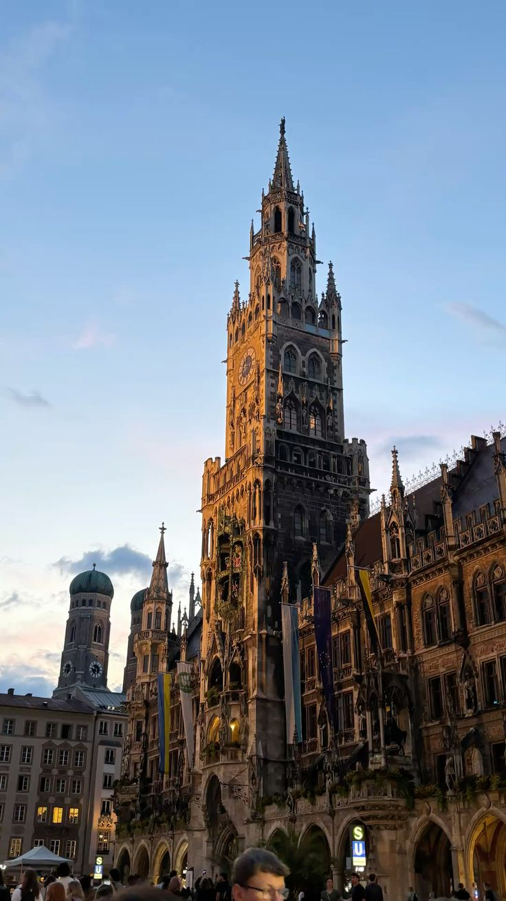
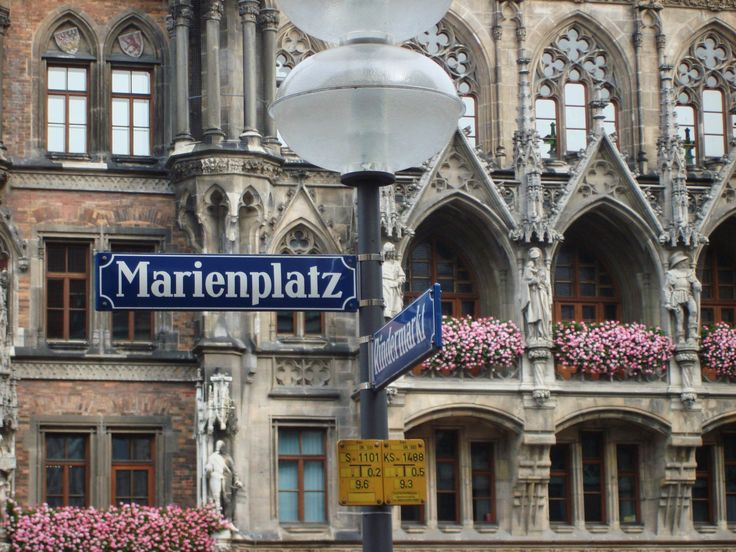

Gusto kong mag-visit sa Germany dahil sa kanilang stunning Gothic architecture, world-famous history, at vibrant city squares. I want to experience ang Glockenspiel's performance sa Marienplatz, makita ang mga intricate statues ng Bavarian dukes, at ma-feel ang fairy tale vibe ng Munich.

Gusto kong mag-visit sa Germany dahil sa kanilang religious heritage, historical monuments, at impressive city landmarks. I want to experience ang makita ang golden statue ni Virgin Mary, malaman ang kwento ng Thirty Years' War, at ma-appreciate ang detail ng mga bronze statues sa gitna ng Munich.

Gusto kong mag-visit sa Germany dahil sa kaniyang vibrant city life, historic landmarks, at stunning architecture. I want to experience ang energy ng central square ng Munich, makita ang iconic na Neues Rathaus, at ma-explore ang puso ng Bavarian culture.
